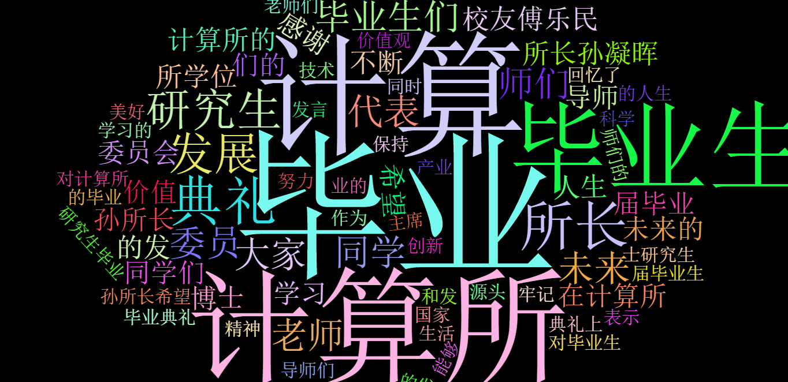

任务状态
词云可视化展示：

正文抽取结果：
6月24日上午，中科院计算所2017届研究生毕业典礼在计算所一层报告厅隆重举行。今年计算所共有名237名研究生毕业，其中67名博士研究生，170名硕士研究生。所长孙凝晖、所党委书记李锦涛、所学位评定委员会主席陈熙霖、副主席李晓维、所学位评定委员会委员卜东波、陈益强、山世光老师以及我所1988届毕业校友傅乐民出席了典礼。典礼由教育处处长李琳主持。 毕业典礼上，所长孙凝晖首先代表计算所对2017届毕业生表示热烈的祝贺！ 同时也对毕业生的家长和导师们表示感谢！孙所长基于“价值观”和“方法论”两点，对毕业生们未来的发展提出了殷切的期望。在中国科学院学习的几年时间，学子们融入的“科学精神”基因，将伴随大家的一生。同时，随着未来人生奋斗的历程不断丰富，一定会深刻地理解计算所“科研为国分忧，创新与民造福”的核心价值观。希望同学们牢记，人的命运只有融合在国家和社会中，才会真正的发挥其最大价值。 孙所长希望大家能够不断追求创新和卓越，脚踏实地，善于团队协作。计算所作为信息技术产业发展的源头，计算所正在努力向世界一流目标发展。作为计算所的毕业生，也应努力保持和发扬计算所的优良传统，不断引领产业的发展做“计算机事业的顶梁柱”。最后，孙所长希望，各位毕业生同学能够树立报国为民的人生信仰，保持内心的清澈。计算所永远是同学们的精神家园、技术源头和发展后盾，欢迎大家常回来看看！ 所长孙凝晖讲话 导师代表山世光老师致辞 现任北京北纬通信科技股份有限公司董事长兼总裁，1988届校友傅乐民、毕业生代表2011级硕博士宋新航也分别回忆了他们在计算所的学习生活，表达了对导师们的衷心感谢，并祝愿大家未来的人生道路更加美好、精彩！ 校友傅乐民发言 毕业生代表2011级硕博士宋新航发言 典礼上，播放了由2017届毕业生们拍摄的毕业视频，毕业生们回忆了在计算所工作和学习的研究生活，表达了对计算所和老师们的感谢，也送上对计算所未来的美好祝福。接着，在庄严的乐曲中，毕业生依次上台，所学位委员会的老师们为毕业生们扶正流苏、颁发《毕业证书》并合影留念。 典礼即结束时，全场师生起立，高唱由田汉和聂耳1934 创作的《毕业歌》，以此激励同学们以国家为己任，牢记使命，“担负起天下的兴亡”!
自动摘要结果：
中科院计算所2017届研究生毕业典礼在计算所一层报告厅隆重举行。
关键词提取结果：
计算所，毕业典礼，毕业歌，致辞